Configuring build settings
The heart of your build is the bitrise.yml file. You can configure the Steps you use, the project type, the trigger map, and specify the app- and Workflow-level Env Vars.
You can configure and customize your builds extensively. Bitrise provides a multitude of options to make sure you can build your app exactly the way you want to.
The heart of your build configuration is the bitrise.yml file: this file contains the configuration of all the Workflows and Steps you use, it specifies the project type, the trigger map, and it contains the app- and Workflow-level Environment Variables you specified. You can store this file on bitrise.io or in your Git repository and you can access the bitrise.yml file of any previous build you ran.
You can configure notifications so that users are immediately notified when a build is finished.
If you don't want to run a build every time a commit is pushed or a pull request is opened, but rather only if certain files are changed, you can do that using the Selective builds feature.
If commits are frequently pushed to your repository, with each commit triggering a new build, you don't have to wait until each triggered build finishes before a new one can start. Use the Rolling builds feature to make sure you don't waste time!
Setting the stack for your builds
The build stack indicates the virtual machine version that Bitrise will use to run your build. You can set the stack for all your builds, or you can set Workflow-specific stacks, either in the Workflow Editor or in the bitrise.yml file.
The build stack indicates the virtual machine version that we will use to run your build. You can set the stack for all your builds, or you can set Workflow-specific stacks.
Changing machine types using the API
You can also change build machine types for all apps owned by a single user or Workspace using the API: Changing machine types in all apps at the same time.
Setting the stack in the Workflow Editor
The simplest way to configure the build stack is in the Workflow Editor. You can set both the default stack and Workflow-specific stacks.
Setting the default stack
The default stack of your app is the stack that is used if you haven't set a specific stack for a Workflow.
Project type
Note that if you change the project type on the app's Settings tab to a type that isn't compatible with your selected default stack, we'll automatically change the stack to a compatible one.
Open your app on Bitrise.
Click the button on the main page.

On the Workflows & Pipelines pages, you can:
Click the button to get to the bitrise.yml tab of the Workflow Editor.
Select a Workflow from the list of the app's Workflows.
On the left, select Stacks & Machines.
In the Default Stack section, open the dropdown menu and select the stack you need.
Click in the top right corner.
Setting a Workflow-specific stack
When you set a stack for a Workflow, that Workflow will always run on that stack, regardless of the default stack.
Open your app on Bitrise.
Click the button on the main page.
On the Workflows & Pipelines pages, you can:
Click the button to get to the bitrise.yml tab of the Workflow Editor.
Select a Workflow from the list of the app's Workflows.
On the left, select Stacks & Machines.
Scroll down to find the Workflow you need.
Select a stack.
Click in the top right corner.
Setting the machine type in the Workflow Editor
You can define the machine type you want to use for your build in the Workflow Editor. The available machine types depend on the type of stack you use: Table 13, “Bitrise build machine types”.
To set the machine type:
Open your app on Bitrise.
Click the button on the main page.
On the Workflows & Pipelines pages, you can:
Click the button to get to the bitrise.yml tab of the Workflow Editor.
Select a Workflow from the list of the app's Workflows.
On the left, select Stacks & Machines.
In the Default Stack section, find the Machine type for the default stack section and choose a machine type.
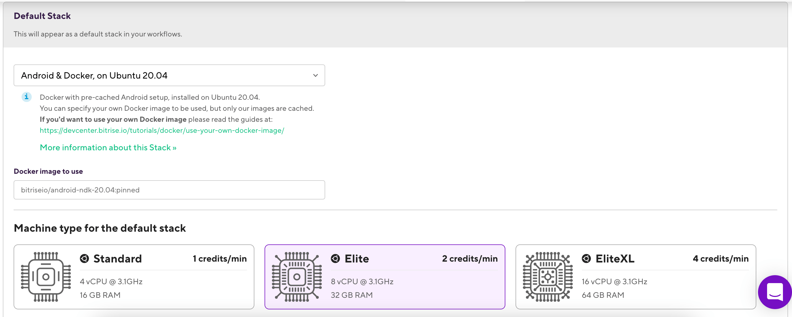Optionally, choose a Workflow-specific machine type for any Workflow that has a Workflow-specific stack set.
Setting the stack in the bitrise.yml file
You can set both the default stack and Workflow-specific tasks in the bitrise.yml file of your app. Use the meta field with the appropriate stack ID:
meta:
bitrise.io:
stack: osx-xcode-13.1.xThis is particularly useful if you keep your bitrise.yml file stored in your app's repository.
Stack IDs
You can find the stack IDs on the top of each stack report: Bitrise stack reports. Alternatively, you can set a stack in the Workflow Editor and then check out the ID on the bitrise.yml tab, by finding the meta field.
The stack reports also show every pre-installed tool that is available on the stack.
Setting the default stack in the bitrise.yml
The default stack of your app is the stack that is used if you haven't set a specific stack for a Workflow.
Open your app's
bitrise.ymlfile.Add a
metaentry outside theworkflowsproperty or at the end of yourbitrise.ymlfile:meta: bitrise.io: stack:Make sure you use double indentation.
Add the stack ID.
You can find the stack IDs on the system reports page: the filenames without the
.logextension are the stack IDs.meta: bitrise.io: stack: osx-xcode-13.1.x
Setting Workflow-specific stacks in the bitrise.yml
When you set a stack for a Workflow, that Workflow will always run on that stack, regardless of the default stack.
Open your app's
bitrise.ymlfile.Find the
workflowsproperty and find the name of the Workflow you need within.Add a
metaentry under the Workflow itself:workflows: deploy: meta: bitrise.io: stack:Add the stack ID.
You can find the stack IDs on the top of each stack report page.
workflows: deploy: meta: bitrise.io: stack: osx-xcode-13.1.x
Setting the machine type in the bitrise.yml file
You can also define the machine type you want to use for your build in the bitrise.yml of your app. Machine type refers to the hardware resources used in your build; for example, an Elite machine has more CPU cores and available RAM than a Standard machine.
To set the machine type in the bitrise.yml file, you need to use the machine_type_id attribute in a meta entry:
Available machine IDs
You can find the available machine type IDs here: Build machine types.
Open your app's
bitrise.ymlfile.Find the
workflowsproperty and find the name of the Workflow you need within.Add a
metaentry:# setting an 8-core Gen2 machine for an Xcode stack as the default machine type of the app: meta: bitrise.io: machine_type_id: g2.8core # setting a 12-core Gen2 machine as a Workflow-specific machine type workflows: deploy: meta: bitrise.io: machine_type_id: g2.12core
Build machine types
Bitrise offers multiple build machines with different specifications and credit costs. You can choose between them based on your needs.
Bitrise offers multiple build machines with different specifications and credit costs. You can choose between them based on your needs.
You can track how much time you spent building your apps on each machine type with Insights: Utilization metrics.
Machine availability by subscription plan
Not all machines are available on all subscription plans. Visit the pricing page to find out which machines are available on your plan!
macOS machines with Intel CPU deprecated
macOS build machines with Intel CPUs have been deprecated. Do not use them in your app's configuration. Instead use the Apple silicon M1 machines.
Operating system | Machine type name | CPU | RAM | Credit cost per minute | Machine type ID for YAML configuration |
|---|---|---|---|---|---|
macOS | M1 Medium | 4 CPU @3.2GHz | 6 GB | 2/min |
|
M1 Large | 8 CPU @3.2 GHz | 12 GB | 4/min |
| |
M1 Max Medium | 5 CPU @3.2 GHz | 27 GB | 6/min |
| |
M1 Max Large | 10 CPU @3.2 GHz | 54 GB | 8/min |
| |
Linux | Medium | 4 vCPU @3.1 GHz | 16 GB | 1/min |
|
Large | 8 vCPU @3.1 GHz | 32 GB | 2/min |
| |
X Large | 16 vCPU @3.1 GHz | 64 GB | 4/min |
|
Managing an app's bitrise.yml file
The heart of your build is the bitrise.yml file. You can configure the Steps you use, the project type, the trigger map, and specify the app- and Workflow-level Env Vars.
The bitrise.yml file is the heart of your Bitrise setup: it stores your entire build configuration for an app. It specifies your stack, the trigger map, and what Workflows and Steps are included. When you edit your Workflows on the graphical UI of our Workflow Editor, you actually modify the bitrise.yml file.
YAML files size limitation
Please note that the total, combined size of the bitrise.yml and the bitrise.secrets.yml file cannot exceed 400KB.
There are two ways to manage the bitrise.yml file of your app:
Keep the file in your Git repository: with this solution, you have full control over maintaining and versioning the
bitrise.ymlfile.Keep it on bitrise.io: Bitrise will store your configuration, and you can access it any time on the website. With this solution, the configuration file is fully independent from your repository.
You can switch between the two solutions at any time.
bitrise.yml reference
You can find detailed reference information about the bitrise.yml file in our relevant guide: Basics of bitrise.yml.
Storing the bitrise.yml file in your repository
Privately hosted repositories
Unfortunately, this feature is not yet supported for users who can't use the service credential user integration or the GitHub App integration; for example, if the repository is is only accessible under a private IP subnet. There's a workaround, however: Storing the bitrise.yml in a privately hosted repository. This workaround works, for example, for Bitbucket Server users.
For GitHub Enterprise, we offer an integration that allows you to store your bitrise.yml file in a GitHub Enterprise repository: Integrating self-hosted GitHub Enterprise Server with Bitrise.
When you store the bitrise.yml configuration file in your repository, the build process on Bitrise will use that file to run your builds. This means that:
You have full control over versioning your configuration file.
Every time you make a change to your Workflows or your trigger map, you must commit the changes to the file in the repository.
You don’t need to create your own bitrise.yml file in advance: you can use the file stored on bitrise.io. Let's see how to store the bitrise.yml file in a repository that does not contain one yet.
The feature requires service credential integration. If the service credential user is not supported, the feature won't work.
Multiple apps with the same repository
You can only store a single bitrise.yml file in a given repository. Bitrise will look for the file in the root directory, and as such, currently there’s no way to include two in separate folders. If you have the code for multiple Bitrise apps in the same repository, we recommend using different Workflows for the different apps.
Open the app on Bitrise and go to the App settings page.
Select Collaboration.
Check the Service credential user section. The service credential user must be a Bitrise user who has at least
readaccess to the repository.Open the Workflow Editor.
In the Workflow Editor, select bitrise.yml from the navigation menu on the left.
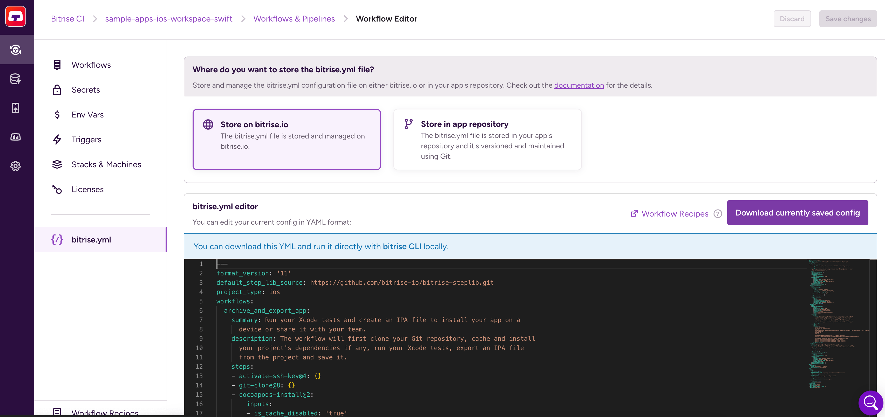Click Store in app repository.
When prompted to add the
bitrise.ymlto your app's repository, you have two options:Copy the content of the current
bitrise.ymlfile to the clipboard. You can then create your own file and copy the contents into it.Download the current
bitrise.ymlfile.
In your repository, commit the
bitrise.ymlfile to the root of the default branch.The default branch of your app must always have a
bitrise.ymlfile on it. You can store differentbitrise.ymlfiles on the other branches: Storing a bitrise.yml file on multiple branches in the repository.You can check your Bitrise app's default branch on bitrise.io by going to the Settings tab and finding the DEFAULT BRANCH option.
On Bitrise, click Update setting.
When prompted to make sure your
bitrise.ymlfile is valid, click Continue.Make sure the file is valid
The
bitrise.ymlfile in your repository always must be valid! If it contains incorrect syntax, it can break your builds.
If all goes well, you should receive confirmation of successfully changing your bitrise.yml storage settings.
Allowlist the Bitrise website IP addresses
If you use some form of self-hosted solution for storing your code, you might need to allowlist the static IP addresses of the Bitrise website and its background workers. This allows you to use such features as storing the bitrise.yml file in your own repository, or receiving build status updates from Bitrise: IP address ranges for Bitrise backend workers.
Updating a bitrise.yml stored in the repository
When you store the bitrise.yml file in your repository, you can still use the online Workflow Editor to make changes to your build configuration. You just need to commit your changes after saving them in the Workflow Editor:
Open your app on Bitrise.
Click the button on the main page.
On the Workflows & Pipelines pages, you can:
Click the button to get to the bitrise.yml tab of the Workflow Editor.
Select a Workflow from the list of the app's Workflows.
Make changes to the Workflows you want to update.
Click in the top right corner.
You're prompted to update the
bitrise.ymlfile in your repository. You have two options:Copy the content of the current
bitrise.ymlfile to the clipboard. You can then create your own file and copy the contents into it.Download the current
bitrise.ymlfile.
In your repository, commit the
bitrise.ymlfile.On Bitrise, click to fetch the
bitrise.ymlfrom your repository.Commit your changes first!
If you haven't committed your changes to the repository, this will overwrite them!
Storing a bitrise.yml file on multiple branches in the repository
When you first add the bitrise.yml to your repository, it must be committed to the default branch. You can check out the app’s default branch on bitrise.io under the Settings tab.
If you choose to store the bitrise.yml file in the repository, the default branch must have a bitrise.yml!
However, once you did the initial configuration to set up using the bitrise.yml from your repository, you can store bitrise.yml files on other branches and use any of them to run builds. If you want to build a branch of your repository on Bitrise, you need to have a bitrise.yml file on that branch. And don’t forget that you always need to keep a bitrise.yml file on the default branch.
Let’s say you have an app called FantasticApp. In FantasticApp’s Git repository, the default branch is called main. There is also a deploy branch.
Any code push or pull request to main triggers a Workflow called main-workflow. Any code push or pull request to deploy triggers a Workflow called deploy-workflow.
In the repository, there is a bitrise.yml file on both the main and the deploy branch, containing both Workflows. When making changes to the Workflows, the FantasticApp team commits the modified bitrise.yml file to both branches to ensure that their Workflows are up to date on both.
Moving the bitrise.yml file back to bitrise.io
The default setting is to store the bitrise.yml file on bitrise.io: when you add a new app, we automatically create a bitrise.yml file for you and it’s stored on our website. If this works for you, then you don’t need to change anything!
If, however, you changed your storage settings to keep the configuration file in your repository, you can easily change it back any time to store the file on bitrise.io.
Open your app on Bitrise.
Click the button on the main page.
On the Workflows & Pipelines pages, you can:
Click the button to get to the bitrise.yml tab of the Workflow Editor.
Select a Workflow from the list of the app's Workflows.
In the Workflow Editor, select bitrise.yml from the navigation menu on the left.
Click Store on bitrise.io.
Choose which
bitrise.ymlfile should be used on bitrise.io from now.You can copy the content of the
bitrise.ymlfile stored in the app’s repository.You can copy the last version of the
bitrise.ymlfile that you used on bitrise.io.
Click Update setting.
If all goes well, you should receive confirmation of successfully changing your bitrise.yml storage settings.
Editing the app's bitrise.yml file
You can edit the file on bitrise.io, in the graphical Workflow Editor, or you can download it and edit it locally. Whenever you modify a Workflow or a Step in the Workflow Editor, you're indirectly editing the app's bitrise.yml configuration file.
Whenever you modify a Workflow or a Step in the Workflow Editor, you're indirectly editing the app's bitrise.yml configuration file. However, if you prefer, you can edit the file directly, in YAML.
Important
This requires some familiarity with the structure of the bitrise.yml file. Read more: Basics of bitrise.yml
You can edit the file on bitrise.io, in the graphical Workflow Editor, or you can download it and edit it locally.
Editing the bitrise.yml file online
You can edit your build config in yml format in the bitrise.yml editor if you go to your app’s Workflow Editor and click the bitrise.yml tab.
Fold and unfold with the - and + signs.
Press Ctrl/Cmd + F for search and replace where you can search with
RegExp,Match Whole Word, case-sensitive, case-insensitive, or to search only in the selected section.Use the preview sidebar on the right for easier navigation.
To save your changes, click in the top right corner.
To download the current bitrise.yml file, click . Alternatively, you can simply select certain sections of the file and copy those into either a local bitrise.yml file or into another app's bitrise.yml file.
Editing the bitrise.yml file locally
Our yml scheme is shared on schemastore. This means that syntax highlight and auto-completion is available for the following files if you edit them locally:
bitrise.ymlstep.ymlbitrise.json
The following editors support the auto-complete feature:
IntelliJ IDEA
PhpStorm
PyCharm
Rider
RubyMine
Visual Studio 2013+
Visual Studio Code
Visual Studio for Mac
WebStorm
JSONBuddy
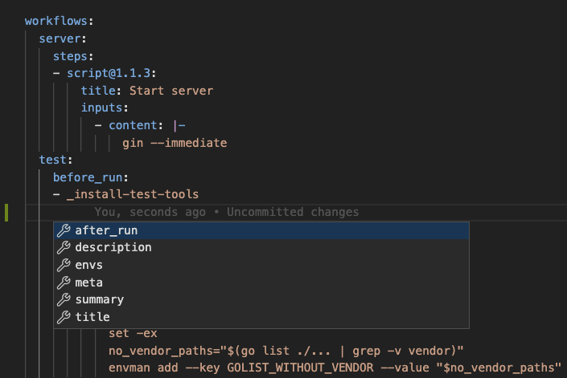
Accessing a build's bitrise.yml file
You can access a build's bitrise.yml file by selecting a build from your app's Dashboard and selecting 'show bitrise.yml' from the bitrise.yml drop-down menu.
Once you ran a build on Bitrise, you can always check the bitrise.yml configuration the build used. You can download it, compare it to the current bitrise.yml file, and you can even replace the current configuration file with the build's configuration file.
To access a build's configuration file:
Select an application on your Dashboard and select one of its builds.
Select bitrise.yml on the right, above the build status card.
In the dropdown menu, select .
Checking changes in the bitrise.yml file
Once you’ve clicked Show bitrise.yml, you will see the BUILD’S BITRISE YML pop-up window displaying your builds’ configuration details. If the build’s bitrise.yml content differs from the current build’s bitrise.yml, you will see two editors displayed side-by-side in the BITRISE.YML CHANGES pop-up window. The differences between the builds are highlighted in the following colors:
Green means added content.
Blue means modified content.
Red means deleted content.
Restoring the current bitrise.yml to the build's bitrise.yml
You can always change the current bitrise.yml configuration to the configuration of one of your app's previous builds. To do so:
Select an application on your Dashboard and select one of its builds.
Select bitrise.yml on the right, above the build status card.
In the dropdown menu, select .
In the BITRISE.YML CHANGES pop-up window, click the Restore button.
Hit OK in the Are you sure? pop-up window to confirm and override the current
bitrise.yml.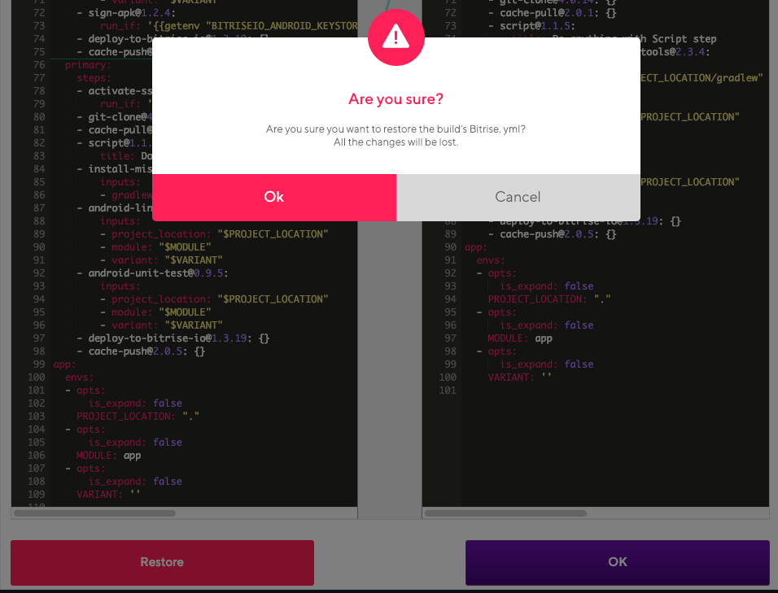
Deleting a build's bitrise.yml file
If you wish, you can simply delete a build’s bitrise.yml file. But please note that this action cannot be undone: nobody will be able to view that particular build’s bitrise.yml file once you delete it.
Select an application on your Dashboard and select one of its builds.
Select bitrise.yml on the right, above the build status card.
In the dropdown menu, select .
In the confirmation window, click Yes.
Selective builds
The Selective builds setting provides change detection for your builds. Enabling it allows you to only trigger a build of an app if certain files or folders have been modified.
Using build triggers instead
This is a legacy feature.
Instead of using this feature, you can now configure build triggers to only trigger builds when certain files or folders have changed: to do so, create a new trigger for push or pull request events, and choose the Files changed trigger condition. We strongly recommend using this option instead of Selective builds.
The Selective builds setting provides change detection for your builds. Enabling it allows you to only trigger a build of an app if certain files or folders have been modified.
You may want to use this setting if:
You have a monorepo; that is, you build multiple apps from a single repository.
Multiple apps share common files in your repository.
Selective Builds with non-Github projects
The current version of our Selective Builds feature only works with GitHub projects. If your repository is hosted by another Git hosting service, the option will not be available.
Let's say you want to make sure that a commit to your app's repository triggers a Bitrise build only if the mycode.go file on the develop branch is modified in the commit.
In this example, you have a branch called
develop.You have a trigger that starts a build every time a code push happens on the
developbranch.In the selective builds feature, you specified the
mycode.gofile in the input field.
If you make a commit on the develop branch that modifies the mycode.go file, Bitrise will trigger a build. If your commit doesn't modify the file in any way, Bitrise will not trigger a build.
To configure selective builds:
Open your app on Bitrise with a user that has the Admin role on the app.
On the main page of the app, click on the App Settings icon:
 .
.
Make sure the appropriate service credential user is set on the Integrations page.
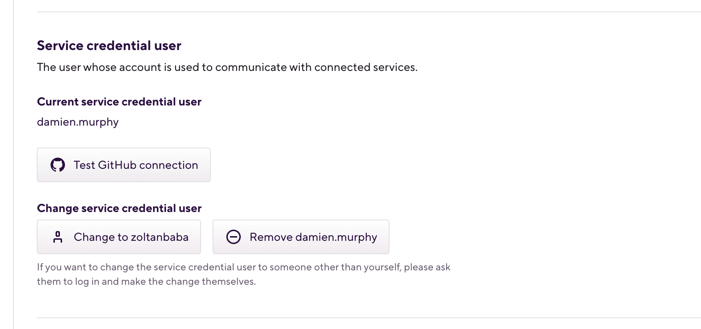This user must have admin right for the GitHub repository of the project.
Click on your app on your Dashboard.
On the left, select Builds.
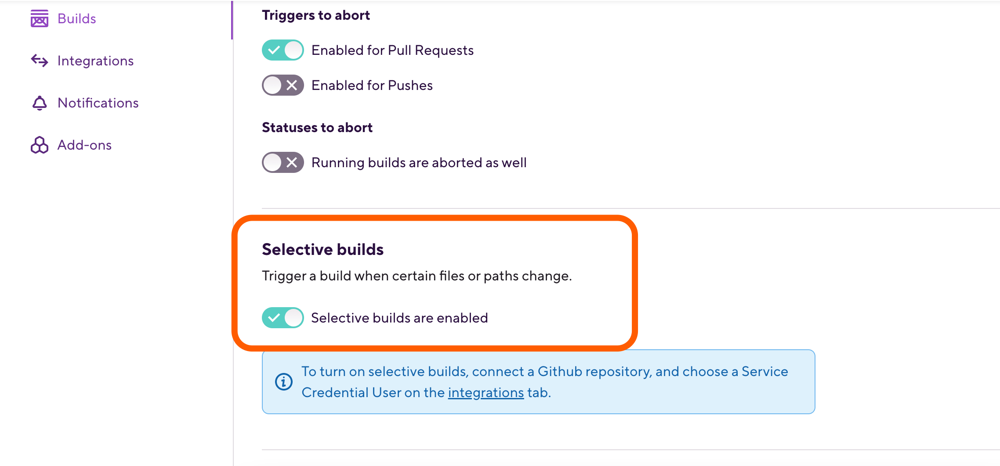Find the Selective builds section.
Click the button.
Can't find the button?
If you can't find the button - like in the screenshot above -, it is because of two possible reasons:
The app's repository isn't hosted on GitHub.
The service credential user isn't set correctly or doesn't have admin rights to the repo.
In the pop-up window, set the paths you need.
You can add one path at a time.
Using patterns in the file name or file path
You do not need to set an exact file name or file path for the Selective builds feature: you can set patterns. Using regular expressions is not supported but the pattern may contain certain metacharacters:
*: Matches all files.a*: Matches all files beginning with a.*a: Matches all files ending with a.*a*: Matches all files that have a in them (including at the beginning or end).**: Matches directories recursively.?: Matches any one character.\: Escapes the next metacharacter.[set]: Matches any one character in set.
Rolling builds
With the rolling builds feature, you can configure Bitrise to automatically abort on-hold builds or already running builds if another build is triggered on the same branch.
You can cancel running builds or builds on hold - no need to abort them manually! If you turn on the Rolling Builds feature, the previous builds of your app can be automatically aborted once a new one is started.
Please note that manual and scheduled builds are also cancelled if you start a new build with the Rolling builds option enabled.
When is a build aborted?
If you trigger a build on a branch where a build is already running, the running build is aborted only if it runs the same Workflow.
For example, if you trigger a build on the master branch of your repository with the deploy Workflow, it will NOT cancel a build running on the same master branch with the primary Workflow.
You can also set which types of triggered builds you wish to abort. Let’s see how!
Open your app on Bitrise with a user that has the Admin role on the app.
On the main page of the app, click on the App Settings icon:
.On the left, select Builds.
Find the Rolling builds section.
Select the type(s) of builds you wish to abort when a new build is started.
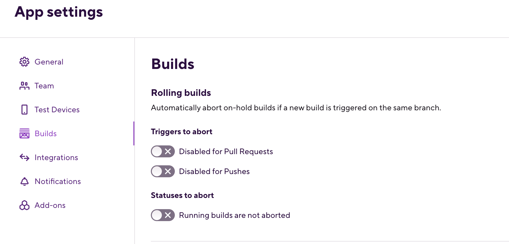
Enabling the options will do the following:
Enabled for Pull Requests: will cancel all previous builds still on-hold for Pull Requests and all related Pushes. Running builds will not be canceled unless Running builds are aborted is also enabled.
Enabled for Pushes: will cancel all previous builds still on-hold for Pushes to the same branch. Running builds will not be canceled unless Running builds are aborted is also enabled.
Running builds are aborted: will also auto-cancel running builds in addition to on-hold ones.
All done! From now on, you don’t have to wait for a triggered build to finish if you do not need it!
Configuring email notifications
Bitrise's built-in email notification system sends emails about builds to every user who is assigned to work on an application. They are sent when a build is finished and they can be configured for both successful and failed builds.
Notifications are updates about your activity on Bitrise. Usually, they concern the state of your builds but you can receive notifications about a lot of different things.
Our built-in email notification system sends emails about builds to every user who is assigned to work on an application. They are sent when a build is finished and they can be configured for both successful and failed builds.
Watching the app
To receive automatic email messages, you need to be watching the app. If you turn off watching, you won’t receive the automated emails.
Email notifications are automatically set up for all applications when first creating them but you can modify these notification settings at any time: Changing your email notification settings
The alternative solution is to send emails via a dedicated Step. This allows for far more customization regarding the notifications: Sending emails with a Step
Watching an app
Watching an app means getting email notifications for that app. This is the default setting for every app you create or you are invited to. Turning off watching the app means you will NO LONGER GET AUTOMATIC NOTIFICATIONS.
To toggle the feature, go to your Dashboard and open the app you want to watch or unwatch. On the top right, you will see a button with the label Watching if you are watching the app currently. If not, the button will show Watch. Toggle it.
Changing your email notification settings
Email notifications are automatically set up for all applications when first creating them. There are three possible settings for both successful builds and failed builds:
Always. This is the default setting for failed builds.
Never.
Send email when build status changes on the same branch. This is the default setting for successful builds. This means that if build #1 and build #2 both succeeded, you will not get a notification about build #2. However, if build #3 fails and then build #4 succeeds again, you will be notified.
You can change your email notification settings at any time - you can even completely disable them.
Open your app on Bitrise with a user that has the Admin role on the app.
On the main page of the app, click on the App Settings icon:
.On the left, select Notifications.
Scroll down to email notifications.
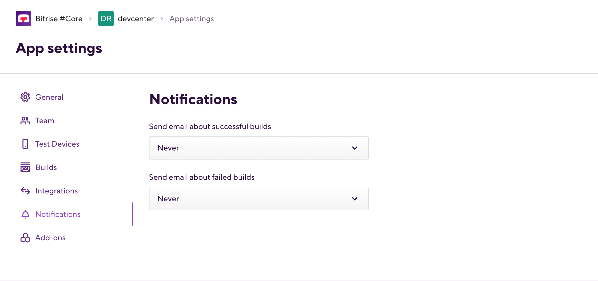Select the settings you need for both successful and failed builds from the appropriate dropdown menu.
For example, if you want to disable receiving notifications, set both options to .
Sending emails with a Step
The Send Email with Mailgun Step can send emails to any email address with customized updates, in either HTML or plain text format. You can use environment variables to send information, as well as attach files to the emails.
To use the Step, you need:
A Mailgun account.
A Mailgun API key.
Your Mailgun domain name.
Make sure the Step runs in every build!
If you use the Send Email with Mailgun Step in your workflow, make sure that it is always set to run even if the previous Step failed! This is the default setting of the Step. If you change it, you will not receive emails if your builds fail.
Create a Secret Environment Variable that holds your Mailgun API key.
We recommend naming the key
$MAILGUN_API_KEY. This is the default value of the Step’s relevant input.Create a Secret Environment Variable that holds your Mailgun domain.
We recommend naming the key
$MAILGUN_DOMAIN. This is the default value of the Step’s relevant input.Add the Send Email with Mailgun Step to the end of your workflow.
Find the Send To emails input of the Step. Click on the input and then click Select secret variable.
Create a new Secret Environment Variable that contains the list of the email addresses.
You can choose any key you want. The addresses should be separated by a comma.
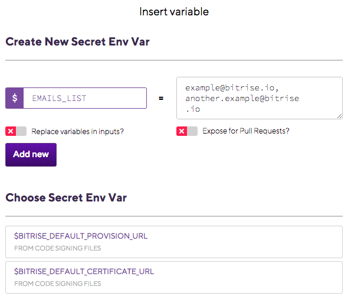Set the email subject, and the two potential email messages: one for a successful build, one for a failed build.
You can insert environment variables to any of the inputs (the subject and the messages). In the email, the values of the variables will be displayed.
The default messages will send the name of the app, the number of the build and whether the build succeeded or failed.
Attach files, if necessary: the File attachments input accepts a file path or an environment variable as input.
Multiple files can be attached: separate their paths with commas.
Run a build - and check your emails!
Configuring Slack integration
You can integrate Slack to your app on Bitrise by adding the "Send a Slack message" Step to your app's Workflow.
Bitrise supports Slack integration, of course - and it’s quite easy to set it up. Send Slack messages to individual users, groups or channels; customize the messages, include attachments, and link buttons that will take the users to the build page.
To use our dedicated Step, you need either a Slack webhook URL or a Slack API token for a Slack bot user.
Make sure that the Step runs in every build!
If you use the Send a Slack message Step in your Workflow, make sure that it is always set to run even if the previous Step failed! This is the default setting of the Step. If you change it, messages won’t be sent if the build fails.
Add the Send a Slack message Step to your Workflow.
Find either the Slack Webhook URL or the Slack API token input. Click on the input and then click Select secret variable.

Create a new Secret Environment Variable that stores your webhook URL or your Slack API token.
You can choose any key you want.
Customize your Slack message with the relevant inputs of the Step.
There are several options, including but not limited to:
Setting the target channel, group or username: this can be a name or an encoded ID.
The text of the message to send.
The bot’s username for the message
The message’s color
File attachment
Link buttons attached to the message
Check out all the inputs in the Workflow Editor to see all the ways in which you can customize your Slack messages.
Setting your Git credentials on build machines
If you want to push back any commits to your own Git repo from Bitrise while running your build, you can set up your Git credentials on build machines.
The default Git username and user email address on our stacks are the following:
git config --global user.email "please-set-your-email@bitrise.io" git config --global user.name "J. Doe (https://devcenter.bitrise.io/builds/setting-your-git-credentials-on-build-machines/)"
If you want to push back (git push) any commits to your own repo from Bitrise while running your build, you have to set your own username and the email address. There are three ways to achieve this:
You can use a custom Script Step to set your credentials with the
git configcommand.You can set your Git credentials as Env Vars.
You can use the Set Git Credentials Step.
Setting your Git credentials using Env Vars
Git has various basic Environmental Variables similar to Bitrise Env Vars. If you would like to reduce the amount of Steps in your Workflow, you can set up Env Vars in Bitrise utilizing specific Git Environmental Variables:
Open the Workflow Editor.
Go to the Env Vars tab.
Create the following Env Vars:
GIT_AUTHOR_NAME: This is the human-readable name of the “author”.GIT_AUTHOR_EMAIL: This is the email address of the "author".GIT_COMMITTER_NAME: This is the human-readable name of the “committer”.GIT_COMMITTER_EMAIL: This is the email address of the "committer".
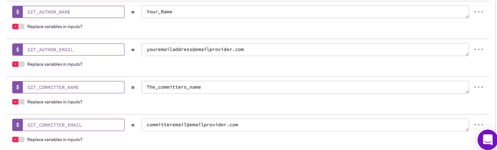
Setting your Git credentials using the Set Git Credentials Step
Add a Set Git Credentials Step as the very first step in your workflow. The Step has to come first before you’d
git commit. This way you can make sure any changes you make to the current build will be attached to a commit associated with your username and email address.In the Git Username field, set the value to your own user name.
In the Git Email Address field, set the value to your own email address.
If all went well, you should see the changes in your repository in your Git provider. The new username and email address will be visible for all future commits you push from your builds to your Git provider.
Reporting the build status to your Git hosting provider
You need to authenticate Bitrise and specify a Service credential user in the App settings page of your app to push back build status reports to your Git provider.
GitHub App integration
If you use the Bitrise GitHub App to connect your Bitrise Workspace to a Git account or organization, you don't need any additional configuration described in the guide: the app automatically provides status reports.
Bitrise can push back build status reports to your Git provider (GitHub/GitLab/Bitbucket). You only need to authenticate Bitrise to communicate towards the Git hosting service. Apart from build status reports, this enables other operations, such as auto-registering SSH keys or webhooks. Status reports are sent only for automatically triggered builds, such as builds triggered by a code push or a pull request.
To do this, you need to specify a Service credential user of your app on bitrise.io. You also need to make sure that this user has a connected account with the Git hosting service of your choice on bitrise.io. This account will be used by Bitrise to communicate with the API of the Git hosting provider.
Configuring build status reporting
Allowlist the Bitrise website IP addresses
If you use some form of self-hosted solution for storing your code, you might need to allowlist the static IP addresses of the Bitrise website and its background workers. This allows you to use such features as storing the bitrise.yml file in your own repository, or receiving build status updates from Bitrise: IP address ranges for Bitrise backend workers.
To report your status, you need to make sure that the service credential user's Bitrise account is connected to their Git provider account. This Git account must have access to the app's repository.
Service credential user restriction
You can only set yourself as the service credential user and to do so, you need to have an Admin role on the app's team on Bitrise.
If the service credential user should be a specific Bitrise user, that user must log in and set themselves. For more information, see: Changing the service credential user.
To check that build status reporting is possible:
In the upper right corner, open the account selector dropdown menu.
Select the option.

Make sure your account is connected to the Git provider that hosts the repository: check the CONNECTED ACCOUNTS menu on the left side.
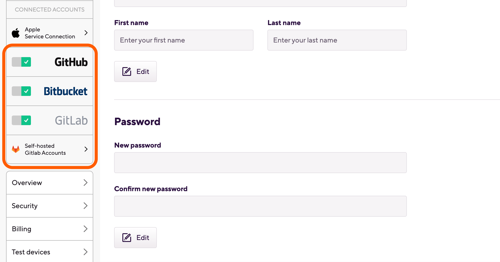Make sure the connected Git provider account has the required level of permission for sending status reports.
On GitHub and Bitbucket, Write access is required.
On GitLab, Developer access is required.
Open your app on Bitrise with a user that has the Admin role on the app.
On the main page of the app, click on the App Settings icon:
.On the left, select Integrations.
Find the Service credential user section.
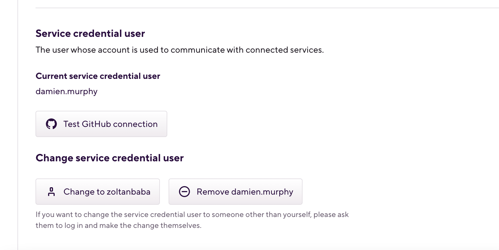Click the Test <Git provider> connection button to make sure the selected user’s connection can be used for sending back the build status to the hosting provider.
Troubleshooting build status reporting
If your builds do not send status reports to your Git hosting provider - GitHub, GitLab or Bitbucket -, you will need to do a little investigating to find out what causes the problem. Let’s take a look at the potential issues!
Checking the service credential user
The service credential user of the app on bitrise.io must have connected their Bitrise account to their Git hosting account and must have access to the repository of the app on that Git account.
You can check the service credential user and test their Git connection.
Open your app on Bitrise with a user that has the Admin role on the app.
On the main page of the app, click on the App Settings icon:
.Go to your app’s page on bitrise.io.
Find the Service credential user section.
Current user
In the figure, the current active user is the service credential user. If the service credential user is a different user, this looks a little different, including the button's text.
Click the button to test the user's Git connection.
Checking repository permissions and repository URL
Make sure that you granted Bitrise access to your Workspace or team. It might be that you did not grant Bitrise access or denied access to the GitHub Workspace or Bitbucket team that owns the repository.
Make sure the URL repository is up to date:
Open your app on Bitrise with a user that has the Admin role on the app.
On the main page of the app, click on the App Settings icon:
.On the left, select General.
Find the repository URL and make sure it's correct.
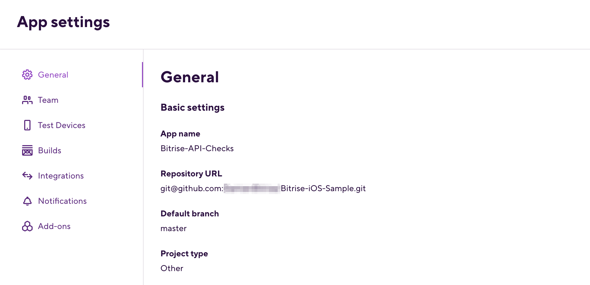